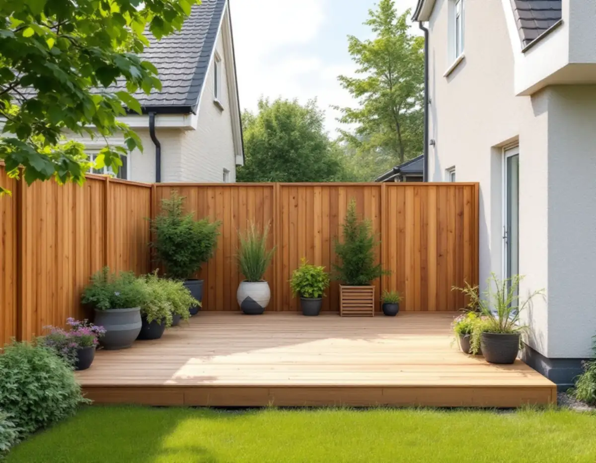
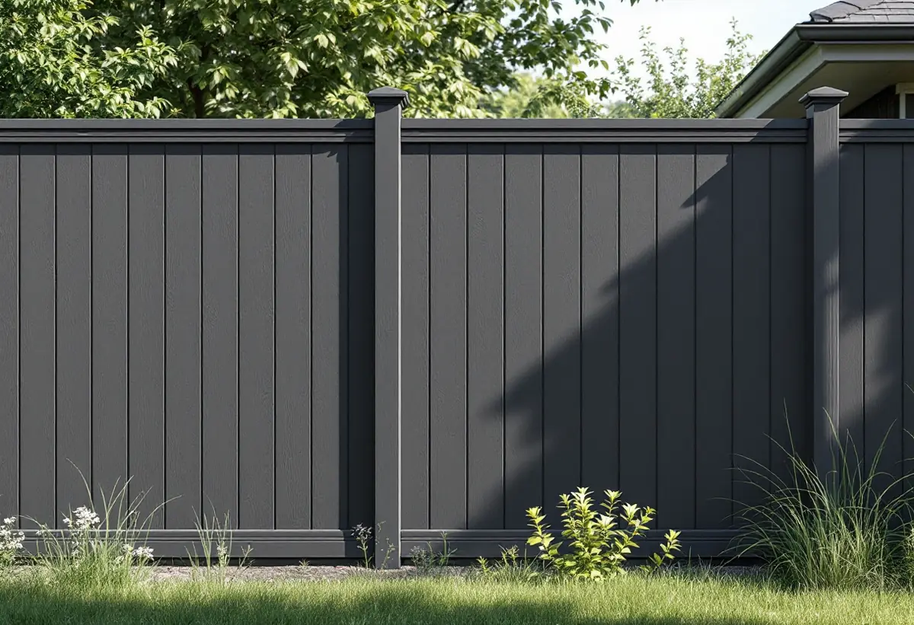
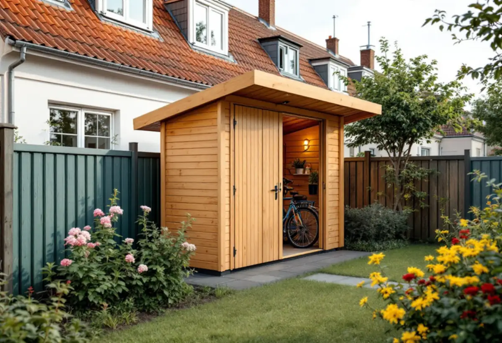

Besök
Gratis besök där vi mäter tomten och tittar på grannarnas utförande.

Nästan alla småhus i Skärholmen är radhus och kedjehus som ägs av de boende.
Beskriv jobbet kort.
Något blev fel. Kontrollera uppgifterna eller ring 08 12 410 276.
Vi tittar på jobbet på plats innan du får offert.
Du ser vad som ingår och vad det kostar.
Vi drar av ROT direkt och sköter ansökan.
Geal Entreprenad AB, Bromma. Org.nr 559303-7566.

Den lilla tomten bakom huset är där snickaren gör mest nytta: en altan i nivå med vardagsrummet, ett plank som skyddar mot insyn och ett förråd för cyklar och trädgårdsmöbler. Vi bygger dem så att de håller måtten för lovfria åtgärder och passar husgruppen.
Bredäng började byggas 1962 och var den första stadsdelen i Stockholm som planerades i stor skala, följd av Sätra. En stor del av bebyggelsen blev radhus och kedjehus, byggda i grupper med enhetlig gestaltning och noga komponerad färgsättning.
Stadens statistik för 2024 visar 1 991 småhus i Skärholmens stadsdelsområde, varav 1 976 med äganderätt. Tomterna är små, och grannen finns nära – vilket påverkar både vad som får byggas och hur.

Enligt Boverket krävs inget bygglov för en altan inom detaljplan om den är högst 1,8 meter över marken och ligger inom 3,6 meter från huset, eller högst 1,2 meter över marken och ligger längre bort. Ska altanen byggas närmare tomtgränsen än 4,5 meter behövs grannens medgivande, och det ska alltid vara skriftligt.
På en radhustomt är det sällan altanen blir hög, men gränsen mot grannen ligger oftast inom 4,5 meter. Vi ritar därför en enkel skiss som grannen kan skriva under, med altanens mått och placering. Ändras markens höjd med mer än en halv meter inom detaljplan krävs dessutom marklov, enligt staden.
Ett plank inom detaljplan kräver inget bygglov om det är högst 1,8 meter och står inom 3,6 meter från huset, eller högst 1,2 meter längre bort. Står planket på en altan eller mur räknas höjden för hela konstruktionen, från marken utanför. Närmare gränsen än 4,5 meter behövs grannens skriftliga medgivande.
Ett vanligt staket och en pergola med glest lagda ribbor kräver enligt Boverket inget bygglov alls. Ibland räcker det för att få den avskildhet man vill ha.
Även när en altan eller ett plank är lovfritt ska det anpassas till omgivningen och inte innebära en betydande olägenhet för grannarna. I Skärholmen, där husen i varje grupp byggdes lika, syns det tydligt om ett plank får en helt annan färg eller höjd än grannarnas.
Staden räknar Bredäng som kulturhistoriskt värdefull miljö. Det är ett skäl till att välja samma kulör och liknande utförande som grannarna, och att titta i detaljplanen innan något byggs.
Ett förråd för cyklar och trädgårdsmöbler kan byggas som en del av planket eller fristående. Vilka regler som gäller beror på storlek och placering, och vi stämmer av mot detaljplanen och stadens regler innan vi bygger. Stadens sida om mur, plank och altan är en bra början.
Virket till altan, plank och förråd ska tåla väder. Vi väljer material efter läget och lämnar råd om underhåll, så att det du bygger håller i många år.
En altan eller ett plank i trä står ute året runt. Det som avgör hur länge det håller är oftast hur vattnet rinner av: brädor med en liten springa emellan, stolpar som inte står i stående vatten och ändträ som skyddas.
Vi bygger med det i tankarna och lämnar råd om när virket ska tvättas och behandlas. Ett plank som målas om vart några år och en altan som rensas från löv mellan brädorna håller betydligt längre än en som lämnas utan tillsyn. Vill du ha hjälp med det också kommer vi gärna tillbaka.
Gratis besök där vi mäter tomten och tittar på grannarnas utförande.
Vi kontrollerar mått, detaljplan och om marklov behövs.
Ritning med mått och placering som grannen kan skriva under.
Plintar och reglar placeras och riktas in.
Altan, plank eller förråd byggs och skruvas.
Vi går igenom resultatet och lämnar råd om underhåll.
Rotavdrag gäller arbete på bostaden och vissa arbeten på tomten. Vilka arbeten med altan, plank och förråd som räknas framgår av Skatteverkets lista, och vi skriver i kostnadsförslaget vad som gäller för ditt arbete.
Avdraget är 30 procent av arbetskostnaden, högst 50 000 kronor per person och år. Material och resor ger inget avdrag. Geal drar avdraget direkt på fakturan.
Altanens eller plankets storlek, höjd och material, hur marken ser ut, om befintliga konstruktioner ska rivas och hur nära grannen det byggs. Efter besöket får du ett skriftligt kostnadsförslag.
Altan, väggar, dörrar och inredning.
Snickare i Stockholm →Takbyte, takbesiktning och plåtarbeten.
Takläggare i Skärholmen →Radhus i grupper i Bredäng, Sätra och Vårberg.
Takrenovering i Skärholmen →Radhustomterna och grannarna.
Attefallshus i Skärholmen →Radhusen, källarplanet och golvbrunnen.
Badrumsrenovering i Skärholmen →Hela ombyggnaden av radhuset.
Byggföretag i Skärholmen →Radhusen från 60- och 70-tal.
Fasadmålning i Skärholmen →Fasader på radhus och kedjehus.
Fasadrenovering i Skärholmen →Radhus i sammanhållna husgrupper.
Fönsterbyte i Skärholmen →Miljonprogrammets radhus.
Fönsterrenovering i Skärholmen →Nya golv i radhus och lägenheter.
Golvläggare i Skärholmen →Parkett och lamellgolv från 1960-talet.
Golvslipning i Skärholmen →1960-talskök, bostadsrätt och radhus.
Köksrenovering i Skärholmen →Lägenheter, trapphus och radhus.
Målare i Skärholmen →Rännor och stuprör i sluttningarna.
Plåtslagare i Skärholmen →Egna radhus i Sätra, Bredäng och Vårberg.
Takbyte i Skärholmen →Ny tapet i hyresrätt och bostadsrätt.
Tapetsering i Skärholmen →Radhusen, uterum och skärmtak.
Tillbyggnad i Skärholmen →Renovera hela huset eller lägenheten.
Totalrenovering i Skärholmen →Eller ring 08 12 410 276, mån–fre 08–17.
Beskriv jobbet kort.
Något blev fel. Kontrollera uppgifterna eller ring 08 12 410 276.